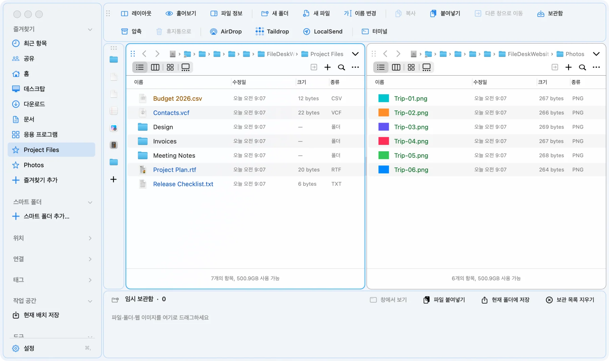
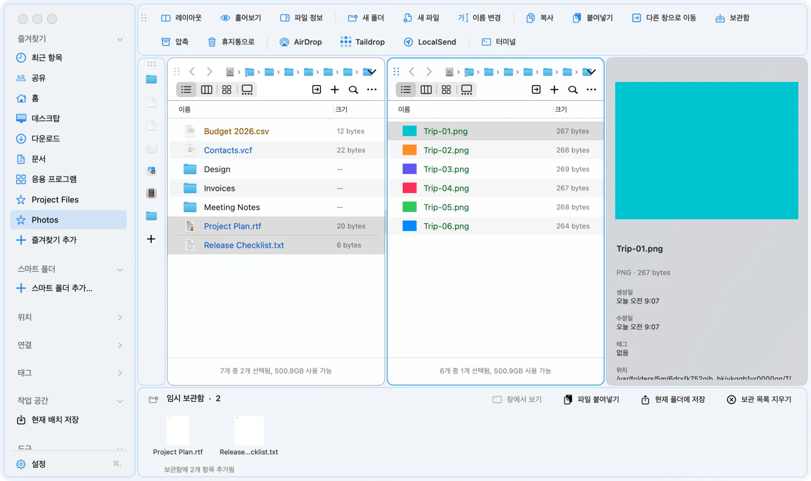
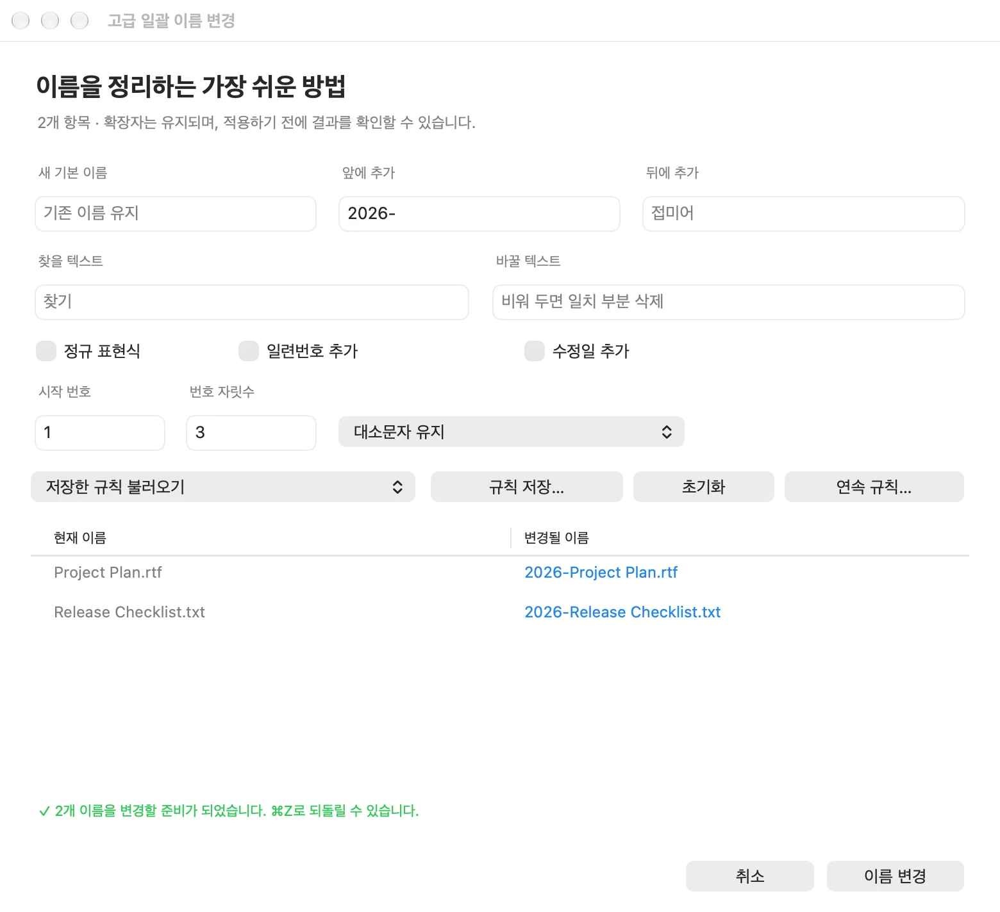

FileDesk 1.25 둘러보기
설정과 도구 막대를 원하는 자리에 두고, 다운로드한 파일을 찾고, 디스크 공간을 살펴보세요.
공개 일반판 1.25(빌드 46)에서 도구 막대 배치, 임시 보관함과 이름 변경을 따라 해 보세요. 언어를 바꾸면 같은 장면을 해당 앱 언어로 볼 수 있습니다.

도구 막대를 원하는 가장자리에
도구 막대가 파일 작업용 시스템 도구 막대와, 직접 등록한 앱·파일·폴더·웹 바로가기를 모은 런처 도구 막대로 나뉩니다. 왼쪽 위 ⠿ 손잡이를 끌어 창의 위·아래·왼쪽·오른쪽에 붙이세요. 손잡이를 클릭해도 위치를 고를 수 있습니다.
왼쪽 메뉴에서 여는 새 설정 창
설정은 도구 막대의 톱니바퀴 대신 왼쪽 메뉴 맨 아래에서 엽니다(⌘,). 일반·화면 모양·도구 막대·왼쪽 메뉴·임시 보관함·전송으로 나뉜 화면에서 도구 막대 위치와 섹션 순서까지 바꿀 수 있습니다.

왼쪽 메뉴 섹션 접기와 순서 바꾸기
섹션 제목을 클릭하면 접히고, 제목을 끌어 자주 쓰는 섹션을 위로 올릴 수 있습니다. 제목을 우클릭하면 모든 섹션을 한 번에 접거나 펼치고 기본 순서로 되돌립니다.
임시보관함: 모아 두고, 한 번에 정리하세요.
파일을 임시 보관함에 끌어 놓으세요. 보관 항목을 선택한 뒤 스페이스 바를 누르면 훑어볼 수 있습니다. 다른 창에서 정리할 때도 같은 보관함을 사용합니다.

바뀔 이름을 먼저 확인하세요.
여러 파일을 선택하고 파일 메뉴에서 ‘고급 일괄 이름 변경…’을 여세요. ‘앞에 추가’에 2026-를 입력하고 표에서 변경 전후 이름을 확인한 뒤 ‘이름 변경’을 누르세요.

일반판 1.25 최초 게시 화면 · 영어


일반판 1.24에서 추가된 기능

다운로드와 임시보관함
다운로드 폴더를 ‘추가된 날짜’로 정렬하세요. 임시보관함에서 항목을 선택한 뒤 스페이스 바로 훑어보거나 ‘창에서 보기’로 원본 위치를 열 수 있습니다. 파일 이름은 색상이나 단색으로 표시할 수 있습니다.
공간을 많이 차지하는 폴더 찾기
폴더의 파일 크기와 디스크에 실제로 할당된 공간을 비교하세요. 자주 쓰는 조건은 스마트 폴더에 저장하고, 파일 내용은 Spotlight로 검색할 수 있습니다.

색상 태그와 목록 정리
체크된 색상을 다시 누르면 이름을 바꾼 태그도 해당 색상으로 해제할 수 있습니다. 다운로드 목록을 열 때 첫 줄이 열 제목 아래에 가려지던 문제와 일괄 이름 변경에서 큰 시작 번호를 처리하던 문제를 고쳤습니다. iCloud의 색상 판별을 고려해 직접 이름을 붙인 회색 태그는 보존합니다.
건너뛴 동기화 충돌 다시 확인하기
이번 동기화에서 건너뛴 충돌은 앱을 다시 열어도 다음 비교에 표시됩니다. 수정 시각은 양쪽 저장소가 공통으로 기록하는 정밀도에 맞춰 비교합니다.
실행 취소와 원격 파일 편집
실행 취소 전에는 해당 경로에 있는 항목이 원래 작업의 대상과 같은지 확인합니다. 원격 파일의 편집 세션은 각각 따로 추적합니다.